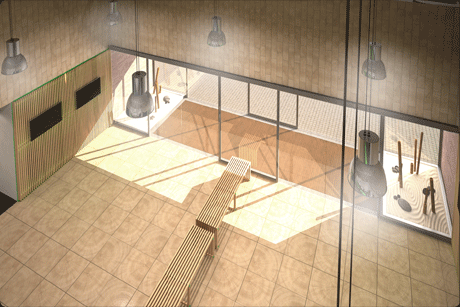

Actividades
Intensidad Alta
Body Pump
Ciclo Indoor
Zumba
Intensidad media/baja
GAP
Abdominales
Body Balance
En forma
Indoor walking
Move it
Acuáticas
Aquadynamic
Infantíl
Juegos Motores 9-15
Circuito de juegos 5-9
Zumba
Noticias

10-04-2013
1ª Semana de Forus

10-04-2013
Cursos intensivos para natación
El centro

Forus Fuenlabrada pondrá a disposición de sus abonados una gran instalación, dedicada al cuidado de la salud, al ocio en familia y, por supuesto, a la práctica deportiva.
La instalación deportiva se estructura en diferentes áreas en función de los espacios y de los servicios y actividades que se desarrollan.
Permanece atento a las promociones que haremos para la inauguración en Septiembre de 2012.